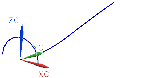
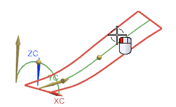
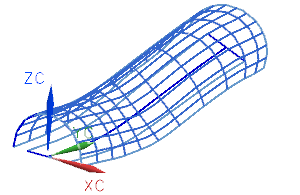

使用面法向方位
-
打开 ffm2_orientation_swept。

您将使用这些曲线来创建多个扫掠曲面。
您将总是使用半圆作为截面，使用样条曲线作为引导线。
您创建的各个曲面将分别使用一种方位选项。
-
使用图层设置
 来选中图层2的复选框。
来选中图层2的复选框。 -
点击曲面工具条上的扫掠
 。
。 -
点击对话框顶部的重置
 。
。 -
在扫掠对话框的截面组中，当选择曲线
 激活时，选择半圆。
激活时，选择半圆。 -
单击两次鼠标中键以结束截面选择并前进至引导线组。
-
在引导线组中，当选择曲线
激活时，选择样条。 -
在截面选项组中，确保已设置下列选项：
-
截面位置 = 沿引导线任何位置
-
对齐 = 参数
-
-
在定位方法子组中，将方向设置为面的法向。
-
选择位于图层 2上的曲面。

-
在缩放方法子组的缩放列表中，选择恒定。
-
在比例因子输入框中，如果需要，键入1.00。
-
点击确定。

注意当截面沿引导线移动时，它保持与选定参考曲面垂直。
-
查看结果，然后删除您刚刚创建的扫掠曲面。
-
使用图层设置
来清除图层2的复选框。